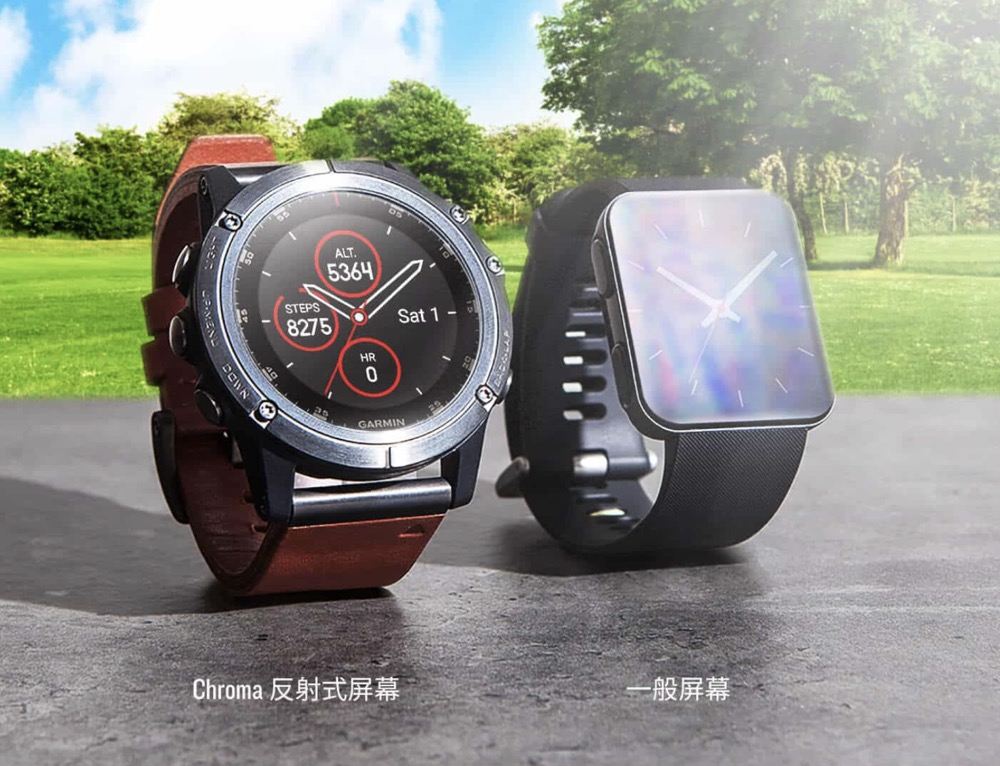
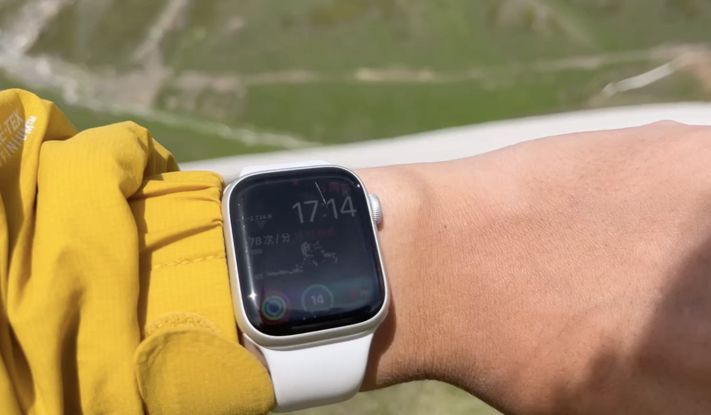
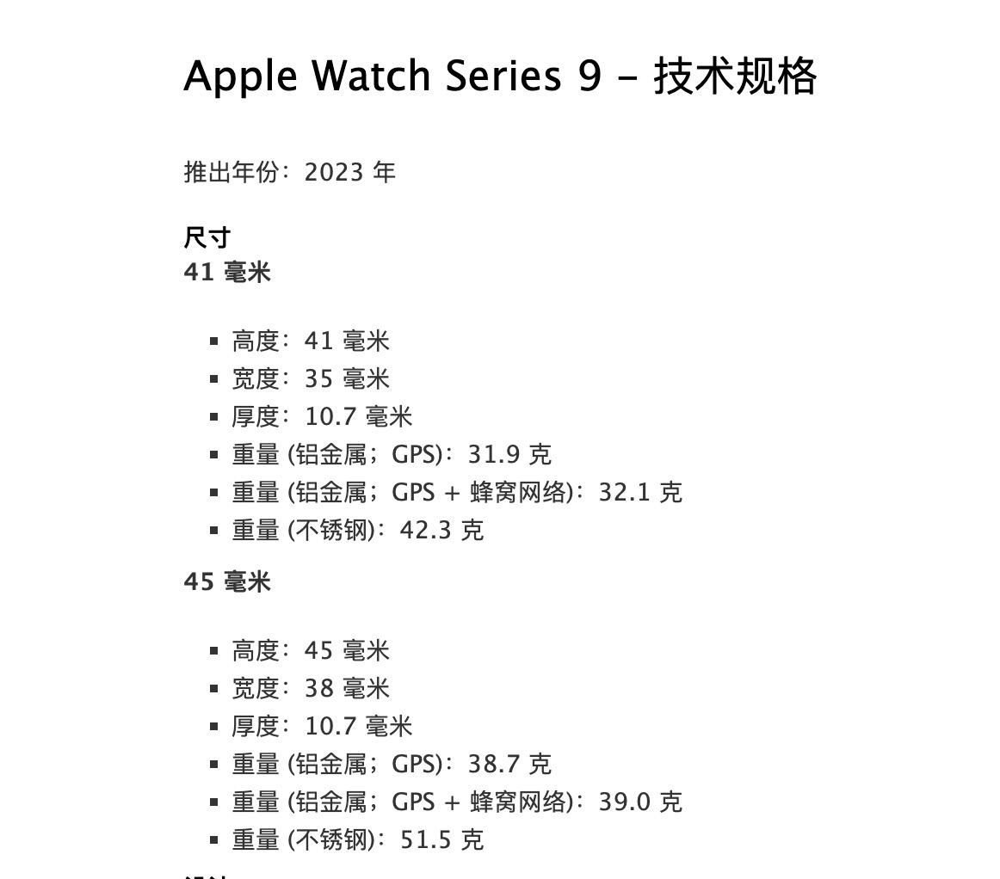
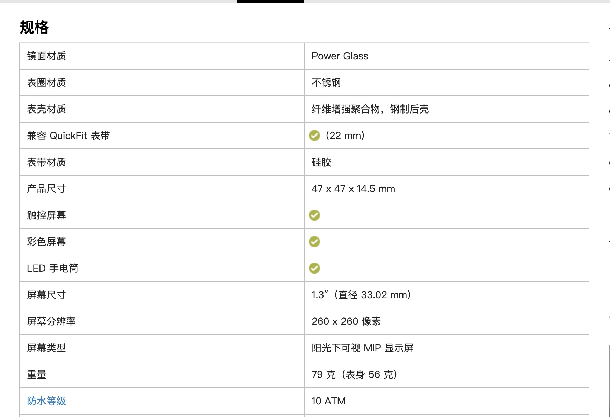
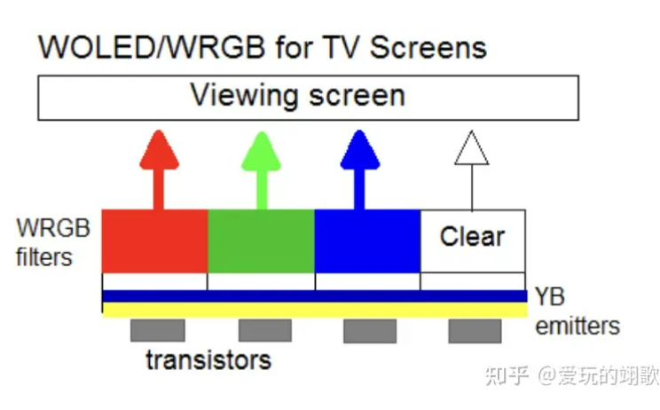
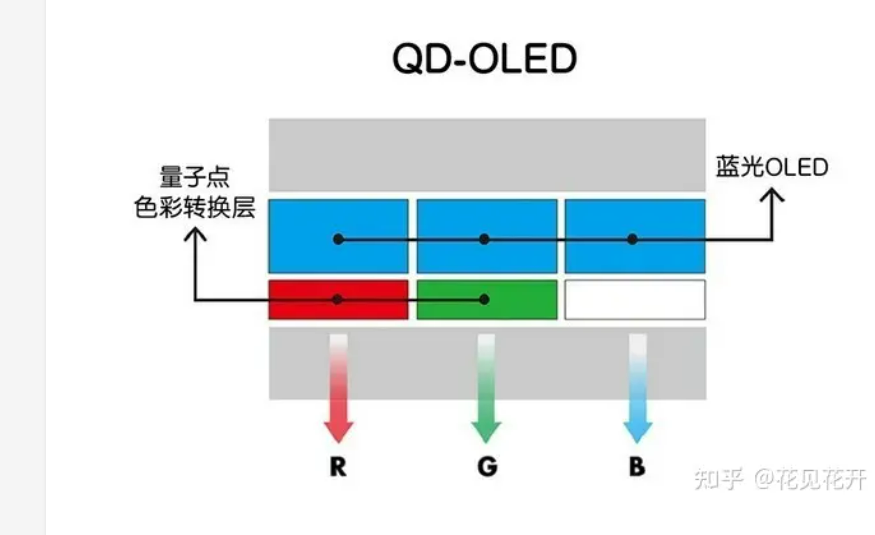

差异

这是Apple watch的屏幕

这是Garmin fenix 7pro的屏幕
可以看到
它们的屏幕一个在正午阳光的直射下变得暗淡
而另一个却非常清晰。
接着我们来到电影院这种弱光环境下
//待补充图// //待补充图//
刚刚可视度明显更好的Garmin fenix 7pro
此时却不如Apple Watch
接着我们再对比两者的电池大小和续航时间:

Apple Watch Series 9 的电池容量分为 41mm 和 45mm x 38mm x **10.7 mm** 两种尺寸，它们的电池容量分别为 ***282 mAh 和 308 mAh。续航1.5-3天***

Apple Watch Series 9 的电池容量分为 41mm 和 45mm x 38mm x **10.7 mm** 两种尺寸，它们的电池容量分别为 ***282 mAh 和 308 mAh。续航1.5-3天***
可以看到两者的电池容量差别并不是很大
但是实际续航时间却差了接近10倍
上面所有的这些差异都是来自于这块「MIP半反射式屏幕」全称：搭载MIP显示技术的半反射式LCD屏幕（Memory-In-Pixel Semi-Transflective LCD Screen）
目前智能手表普遍存在的问题:
和电脑、手机等数码产品一样
运动手表屏幕的底层显示技术也可以分为LCD和LED两类


佳明的MIP LCD屏幕底层是LCD
这和市面上绝大多数同类产品一样
Apple watch则是LED
只所以突然提起LCD和LED
是因为想要更好地讲清楚和理解「MIP LCD」
必须要先对这两个基础概念有所了解
简单讲
它们的主要区别是LCD的像素不是自发光
而是依靠其背后的背光板
而lED的每颗像素都能自发光
展开来讲肯定会显得非常啰嗦
而且很多朋友对此并不陌生
所以进一步的区别我在下文中用颜色字体进行了标注
完全没了解过LCD和LED的朋友可以阅读
熟悉的朋友
可以略过～
前者LCD的每个像素自身不发光，光源是来自像素底下的一层白色背光板（有的技术比如QD-OLED是蓝色背光板，这不重要），光线首先通过液晶层，再通过滤光片由滤光片单独分离出红绿蓝三原色，最终实现画面显示。其中，背光板的亮度、液晶层的透明度（光线通过率）直接影响最终亮度；滤光片的开合大小直接决定三原色的混合比例，组成各种颜色。他们（背光板、液晶层、滤光片）都由电压控制
后者LED是每个像素都是由红绿蓝白等发光二极管组成，它们能够自发光，通过电压控制红绿蓝白几种原色的亮度比例就能混合出不同的颜色跟整体亮度
就如前面提到的QD-OLED，LCD目前已经衍生出了很多新的衍生技术，其中有一些被厂家宣称是led屏幕的，其实本质上也是lcd技术，只不过可能做了分区背光或者其他改动，但本质上还是LCD。直接稿件撰写日，O-led、MicroLED才是真正的led，其他本质上都算是LCD。
LCD优势：市场成熟。相较于LED，LCD的制作成本更低。目前市面上大概超过80%（自己估的）的智能设备都使用LCD方案，包括佳明**「MIP半反射式屏幕」**也是LCD方案。
LCD劣势：无论显示全黑还是局部黑，背光板都需要持续发光，存在浪费电量的情况（分区背光方案不算）；因为光线透过液晶层和“滤光片”这个过程中存在能量损耗和衍射，也就是漏光现象，所以LCD相较于LED的色彩表现、亮度稍逊一些，而且存在“上限”。
LED优势：相比于LCD，由于没有了中间层，色彩表现可以更好（颜色饱和度更高，色域覆盖更广），也可以做得更薄。
LED劣势：制造成本相对更高；存在老化与烧屏风险（有机发光材料会随着使用时间逐渐衰减，俗称老化，这会导致亮度逐渐下降或出现可能的色彩偏移。特别是如果长时间显示高亮度静态图像，会更容易出现残影甚至永久性的“烧屏”(Burn-in)
然而无论是LCD还是LED
他们都依赖于自身发光来对抗环境光。
而正午时分的太阳光足足有xxxnits
要知道即便打开65W的手电筒
也才xxxxnits
目前最亮的LEDxxxxnits
LCD这边由于技术瓶颈限制亮度上限比不过LED
最高只能做到xxxxnits
（否则就会出现肉眼可见的漏光现象）
那么问题显而易见
**只要是依赖于自身发光来对抗环境光的设备**
**在户外强光环境下的表现通通都不会好。**
（Apple watch s8，峰值亮度1200nit，而最新版的Apple watch s9、ultra，峰值亮度已经达到2000nit，我到手实测，峰值亮度情况下正午阳光直射稍微能过看清楚屏幕内容了，但只能坚持几秒钟。）
这也是为什么Apple Watch等设备
虽然标称峰值亮度很高
例如Apple Watch8标称1200尼特/nits
但户外强光下实测其可视性表现仍然不可观。
超高亮度模式通常也只能维持极短时间（几秒到几十秒）
这是因为LED这边的烧屏风险和功率发热问题
高亮度需要高功耗
意味着电池续航受到影响
而且产生的发热
甚至可能会影响生物传感器的数据采集准确度。
其次LCD这边由于其背光板是一整块，所以即使显示黑色区域时背后的背光板也需要持续工作，浪费电量，所以显示相同内容、相同亮度时，功耗会相对LED也会稍微高一些（尤其全亮时）
LED（OLED）当显示黑色或深色画面时，对应的像素点可以完全关闭或调整电压，不消耗或减少电能。但目前很多厂家宣称的所谓led屏幕其实本质上也是lcd技术，只不过做了分区背光，O-led、MicroLED是真正的led，其他本质上都算是LCD技术，具有一定的欺诈性。
总结一下目前大部分智能手表存在三个问题：
小结论1：无论是LCD还是LED，通过堆亮度都比不过阳光，不能解决在户外场景下的可视度问题
小结论2：LED通过堆亮度虽然赢过了普通LCD，但存在老化、掉续航、成本和发热等问题。
小结论3：LCD和LED技术存在显示黑色内容时，无效发光导致的电量浪费情况，及刷效率。而在智能腕表这么小的体积下，电量非常可贵，续航体验非常重要。
什么是MIP LCD技术
1、半反射式
MIP LCD的原理
是在屏幕LCD背光层之上植入一片金色反射层
让一部分光线穿透屏幕反射出去
既然自发光怎么都比不上阳光
那我就利用阳光来显示信息
阳光越强烈，屏幕显示的内容也就越清晰
还不额外耗电。
半反射式完美解决了第1个问题：通过堆亮度都比不过阳光，不能解决在户外场景下的可视度问题
金属反射层会对透光率有一定影响
但是在电影院、夜晚这种极暗的环境下
其实只需要极低的亮度就能提供出色的可读性了
金属反射层对透过率的影响就这样被磨平
2、MIP（**Memory-In-Pixel）**
MIP，解决了LCD和LED技术存在显示黑色内容时，无效发光导致的电量浪费情况
原理是在每个像素背后连接一个小型内存
负责记录每个像素的状态
它允许像素在不接收来自处理器的新信息时保持其原有的状态
这就意味着在显示固定的图像时
像素不需要进行刷新
处理器每次更新信息时也只需要改变部分像素。
有什么特别之处
前面我们讲过
无论是LCD还是LED
它们都是按照设定的帧率向处理器索取显示信号刷新屏幕
即便是在显示静止不动的画面时像素与上一帧其实并没有变化
屏幕也会按照设定的刷新率重新绘制一份相同的图像
例如数字5
这个过程需要向处理器获取一次显示信号
处理器再传回一次
一来一回的电信号传输
无异浪费电池的能量。
MIP的不再向处理器获取信息
意味着不再需要消耗电量
这就是Garmin和Apple watch（包括其他采用普通LCD、LED屏幕的手表）续航差距这么大的主要原因。
最后
目前市面上的智能腕表屏幕大部分都是采用的色彩更鲜艳的oled技术，是否是用户有这个需求？如果是，MIP技术可以应用在LED屏幕中吗？
我认为户外用户是没有这个需求的，对于用户而言，色彩鲜艳带来的性价比其实并不高。其他厂家普遍采取oled屏幕可能只是一种市场默契吧，单单只是提高数码科技感，并不是从户外和实际使用角度出发。另外很多所谓的厂家宣称的led屏幕其实本质上也是lcd技术，只不过做了分区背光，具有一定的欺诈性
展示图片（O-led、MicroLED是真正的led，其他本质上都算是LCD技术）
其次就算用户有这个需求，技术上是可以实现MIP+LED的，只不过商业上行不通，因为LED比LCD材料贵，加上Garmin的应用场景还是户外，需求痛点是高续航、可视度、性价比，对色彩敏感度并不那么感冒。如果用户不买单，厂家自然就不会做了。
总结
总结，led屏幕满足智能生活场景，但目前在户外场景下存在可视度、性价比问题。而MIP-LCD适合全场景，特别是户外场景。